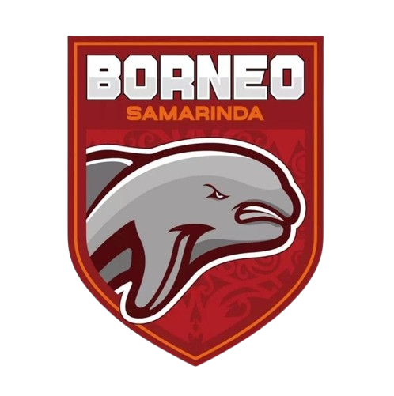

|

|
Borneo Football Club adalah klub Sepak Bola profesional di Kota Samarinda, Provinsi Kalimantan Timur. Klub ini dimiliki oleh H. Nabil Husien Said Amin. Borneo FC didirikan pada 7 Maret 2014.
Kiprah Borneo FC di Liga Indonesia dimulai pada tahun 2014, saat berkompetisi di Divisi Utama. Klub yang memiliki julukan Pesut Etam ini sukses promosi sekaligus menjadi juara pada kompetisi kasta kedua tersebut. Di babak final ini, Borneo FC mengalahkan Persiwa Wamena 2-1. Keikutsertaan Borneo FC pada kompetisi ini didapat setelah sebelumnya melakukan akuisisi terhadap klub Perseba Super Bangkalan.
Borneo FC mengawali kiprah perdana berkompetisi di level tertinggi Sepak Bola Indonesia dengan mengikuti Indonesia Super League 2015 atau dikenal dengan QNB League. Namun, kompetisi ini hanya memainkan dua pertandingan setelah PSSI sebagai induk organisasi tertinggi Sepak Bola Indonesia di banned oleh Kementerian Pemuda dan Olahraga (Kemenpora) Republik Indonesia. Ditahun yang sama, Borneo FC mengikuti Piala Presiden 2015, pada pergelaran ini perjalanan Borneo FC terhenti di babak 8 besar. Masih di tahun yang sama, Borneo FC kembali mengikuti Piala Jenderal Sudirman. Pada ajang yang diikuti oleh tim terbaik di Indonesia itu, Borneo FC hanya mampu menembus babak semifinal.
|